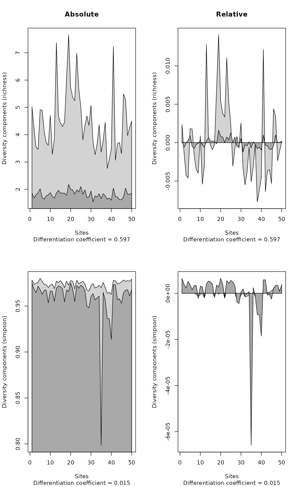

contribdiv.RdThe contribution diversity approach is based in the differentiation of within-unit and among-unit diversity by using additive diversity partitioning and unit distinctiveness.
contribdiv(comm, index = c("richness", "simpson"), relative = FALSE, scaled = TRUE, drop.zero = FALSE) # S3 method for contribdiv plot(x, sub, xlab, ylab, ylim, col, ...)
| comm | The community data matrix with samples as rows and species as column. |
|---|---|
| index | Character, the diversity index to be calculated. |
| relative | Logical, if |
| scaled | Logical, if |
| drop.zero | Logical, should empty rows dropped from the result?
If empty rows are not dropped, their corresponding results will be |
| x | An object of class |
| sub, xlab, ylab, ylim, col | Graphical arguments passed to plot. |
| ... | Other arguments passed to plot. |
This approach was proposed by Lu et al. (2007).
Additive diversity partitioning (see adipart for more references)
deals with the relation of mean alpha and the total (gamma) diversity. Although
alpha diversity values often vary considerably. Thus, contributions of the sites
to the total diversity are uneven. This site specific contribution is measured by
contribution diversity components. A unit that has e.g. many unique species will
contribute more to the higher level (gamma) diversity than another unit with the
same number of species, but all of which common.
Distinctiveness of species \(j\) can be defined as the number of sites where it occurs (\(n_j\)), or the sum of its relative frequencies (\(p_j\)). Relative frequencies are computed sitewise and \(sum_j{p_ij}\)s at site \(i\) sum up to \(1\).
The contribution of site \(i\) to the total diversity is given by \(alpha_i = sum_j(1 / n_ij)\) when dealing with richness and \(alpha_i = sum(p_{ij} * (1 - p_{ij}))\) for the Simpson index.
The unit distinctiveness of site \(i\) is the average of the species distinctiveness, averaging only those species which occur at site \(i\). For species richness: \(alpha_i = mean(n_i)\) (in the paper, the second equation contains a typo, \(n\) is without index). For the Simpson index: \(alpha_i = mean(n_i)\).
The Lu et al. (2007) gives an in-depth description of the different indices.
An object of class "contribdiv" inheriting from data frame.
Returned values are alpha, beta and gamma components for each sites (rows)
of the community matrix. The "diff.coef" attribute gives the
differentiation coefficient (see Examples).
Lu, H. P., Wagner, H. H. and Chen, X. Y. 2007. A contribution diversity approach to evaluate species diversity. Basic and Applied Ecology, 8, 1--12.
## Artificial example given in ## Table 2 in Lu et al. 2007 x <- matrix(c( 1/3,1/3,1/3,0,0,0, 0,0,1/3,1/3,1/3,0, 0,0,0,1/3,1/3,1/3), 3, 6, byrow = TRUE, dimnames = list(LETTERS[1:3],letters[1:6])) x#> a b c d e f #> A 0.3333333 0.3333333 0.3333333 0.0000000 0.0000000 0.0000000 #> B 0.0000000 0.0000000 0.3333333 0.3333333 0.3333333 0.0000000 #> C 0.0000000 0.0000000 0.0000000 0.3333333 0.3333333 0.3333333## Compare results with Table 2 contribdiv(x, "richness")#> alpha beta gamma #> A 1 1.5 2.5 #> B 1 0.5 1.5 #> C 1 1.0 2.0contribdiv(x, "simpson")#> alpha beta gamma #> A 0.6666667 0.1851852 0.8518519 #> B 0.6666667 0.1111111 0.7777778 #> C 0.6666667 0.1481481 0.8148148## Relative contribution (C values), compare with Table 2 (cd1 <- contribdiv(x, "richness", relative = TRUE, scaled = FALSE))#> alpha beta gamma #> A 0 0.5 0.5 #> B 0 -0.5 -0.5 #> C 0 0.0 0.0(cd2 <- contribdiv(x, "simpson", relative = TRUE, scaled = FALSE))#> alpha beta gamma #> A 0 0.03703704 0.03703704 #> B 0 -0.03703704 -0.03703704 #> C 0 0.00000000 0.00000000#> [1] 0.5#> [1] 0.1818182## BCI data set data(BCI) opar <- par(mfrow=c(2,2)) plot(contribdiv(BCI, "richness"), main = "Absolute") plot(contribdiv(BCI, "richness", relative = TRUE), main = "Relative") plot(contribdiv(BCI, "simpson")) plot(contribdiv(BCI, "simpson", relative = TRUE))par(opar)